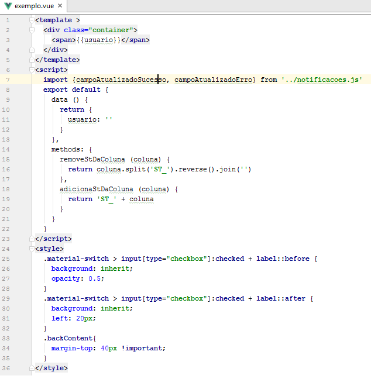
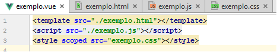
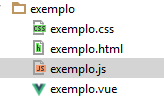

Arquivos .vue com html / javascript / css
O vue nós permite construir um componente em um único arquivo como visto em single file e no exemplo abaixo.
Trabalhar desta forma inicialmente aumenta a produção, pois todo o código está em um só lugar.
O problema
Conforme o componente for crescendo a manutenção dele pode ficar custosa.
Sendo interessante ( além de quebrá-lo em componentes menores), também dividir o .vue em arquivos separados.
A Solução
 Assim separamos a estrutura (html), comportamento (js) , e estilo (css) em arquivos distintos, tornando a sanidade do código em um nível aceitável.